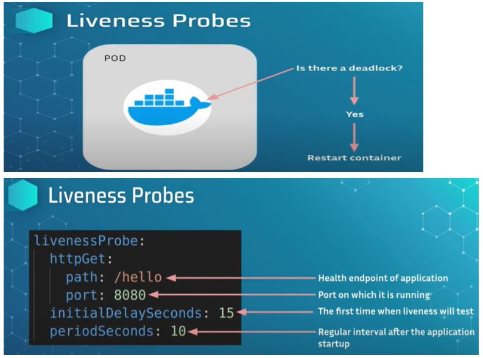
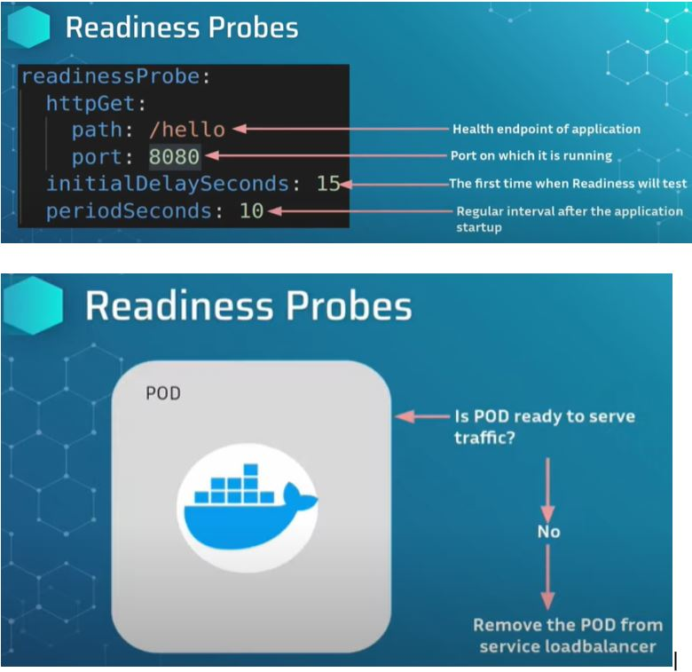
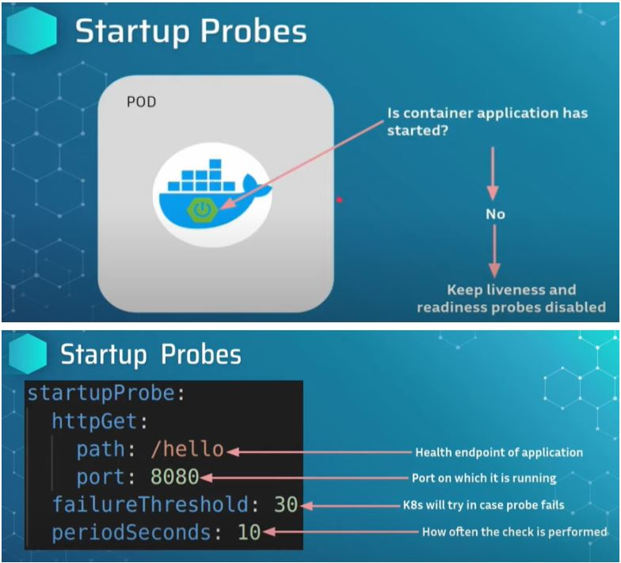

Liveness Probe tells k8 cluster to restart the container.
Suppose there is a deadlock happening inside a kubernetes cluster and the docker container does not start.
Readiness probe works as a door keeper for incoming traffic
it is responsible for telling if the pod is ready to receive the traffic or not. If the pod is not ready to receive the traffic then the readiness pod will tell the k8 cluster to remove the pod.also if it is healthy then also it is going to tell k8 cluster that this pod is ready to receive the traffic and ask to add the load balancer
Startup probe is responsible for the running application inside the container.
it checks that the application is running or not inside the container and then informs the k8 cluster the status, if application is not running then startup probe will inform Liveness and Readiness probe to not start.
